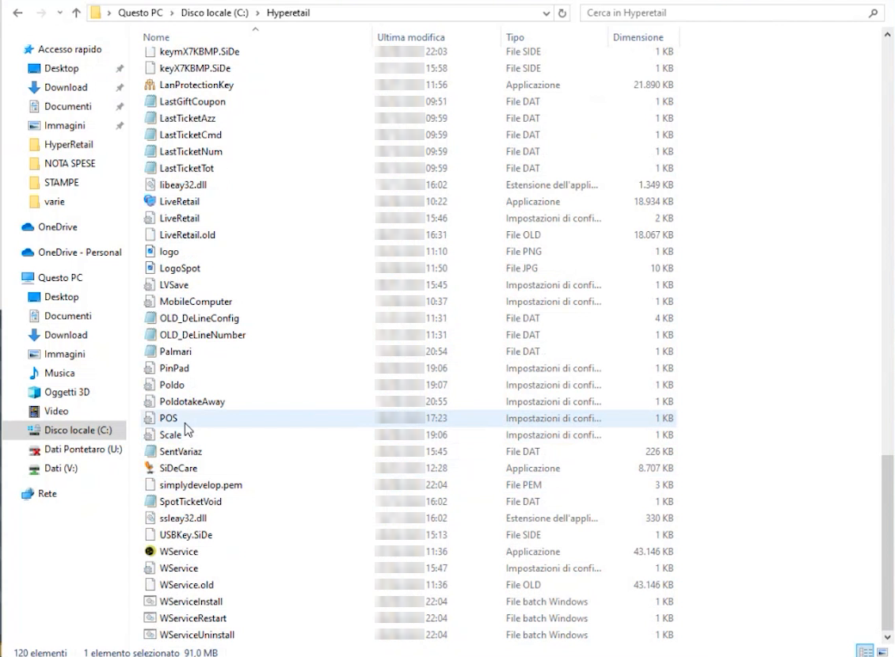
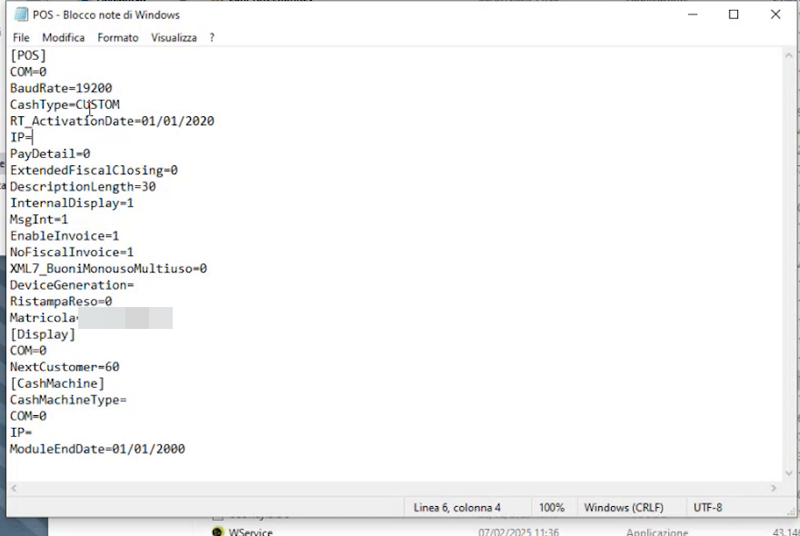
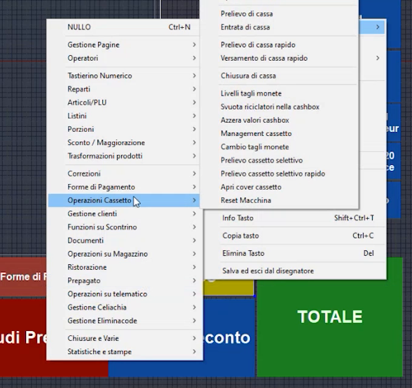
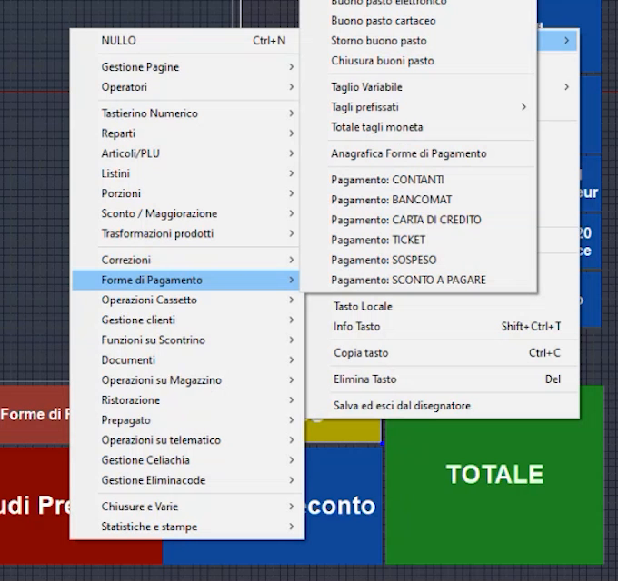
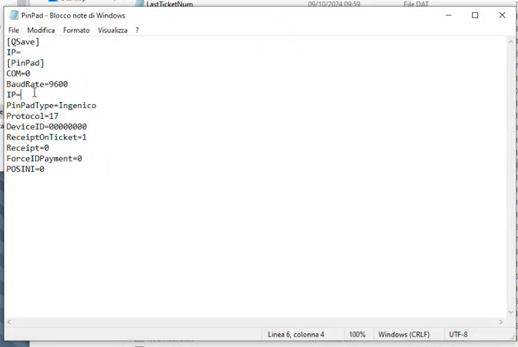
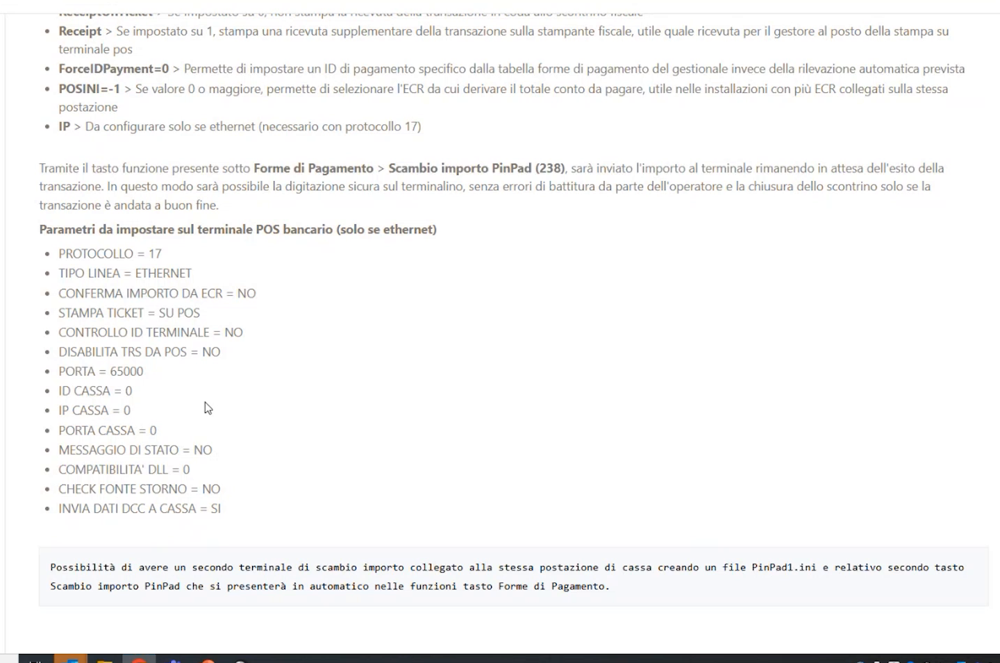
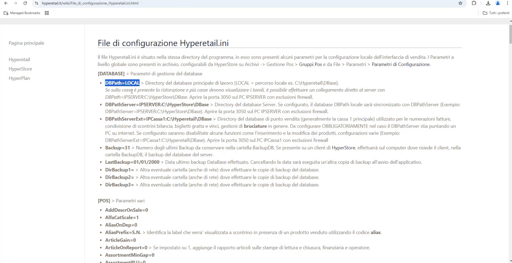
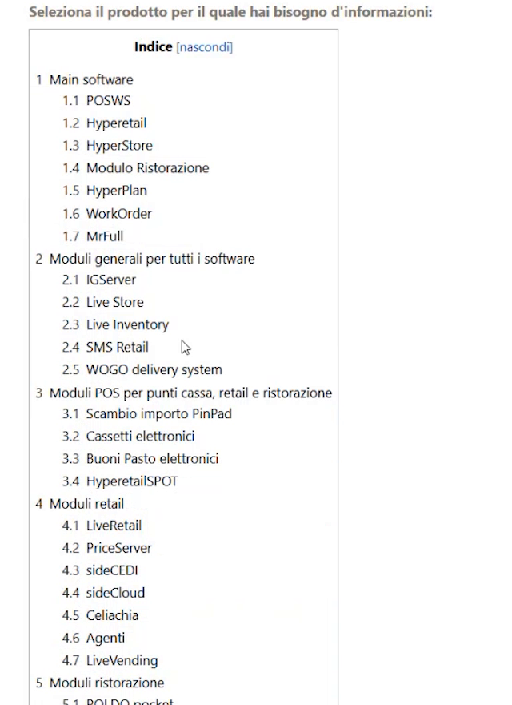
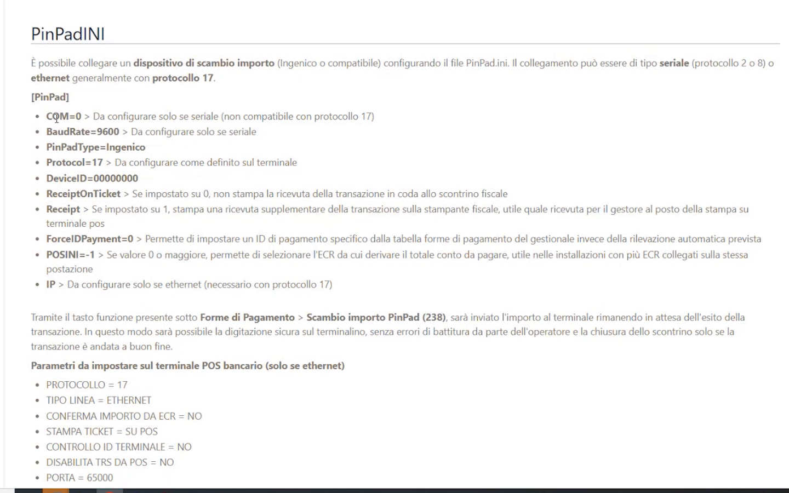

File INI, registratore telematico, cassetto elettronico e POS
TARGET: tecnico installatore · DURATA STIMATA: 30 minuti
Obiettivo
Collegare a Hyperetail il registratore telematico, il cassetto elettronico e il POS bancario modificando i file di configurazione INI nella cartella di installazione.
Prerequisiti
- Hyperetail installato e configurato fino alla schermata di vendita.
- Registratore telematico Custom collegato via seriale o LAN (protocollo Custom, impostato di default).
- Per cassetto e POS: modello e indirizzo IP del dispositivo.
I file INI
I file INI si trovano nella cartella di installazione (C:\Hyperetail) e si
modificano con il Blocco note. Prima di intervenire esci da Hyperetail (è
sufficiente anche ridurlo a icona).

| File | Funzione |
|---|---|
POS.ini |
Collegamento della stampante fiscale (e del cassetto elettronico) |
PinPad.ini |
Collegamento del POS bancario (scambio importo) |
Hyperetail.ini |
Configurazione generale del software (database e altre impostazioni) |
Collegare il registratore telematico (POS.ini)
- Esci da Hyperetail (o riducilo a icona).
-
Apri
POS.inicon il Blocco note.
-
Nella sezione
[POS]imposta il collegamento:Collegamento Cosa impostare Seriale COM=con il numero della porta COM collegata eBaudRate=LAN IP=con l'indirizzo IP della stampante fiscaleIl protocollo è già impostato su Custom (
CashType=CUSTOM). -
Salva il file e avvia Hyperetail.
- Al primo collegamento il software si connette alla stampante fiscale e
rileva anche la matricola del registratore, che riporta nel file
(
Matricola=).
Cassetto e display
Nello stesso file sono presenti le sezioni [Display] e
[CashMachine] per il display cliente e per il cassetto elettronico.
Collegare il cassetto elettronico (POS.ini)
Il modulo base si collega da solo ai principali cassetti elettronici
presenti sul mercato. Si configura nella sezione [CashMachine] di POS.ini:
| Cassetto | Cosa scrivere |
|---|---|
| Glory | CashMachineType=Glory e IP= con l'indirizzo IP del cassetto |
| CashMedic | CashMachineType=CashMedic, senza indirizzo IP: il software riconosce la cartella del driver di CashMedic installato in Windows |
Attivare il tasto in vendita
La connessione va poi abilitata nella schermata di vendita:
- Entra nel Disegnatore (doppio clic con il tasto destro oppure CTRL+SHIFT+D).
- Tasto destro sul tasto da usare → Funzione tasto.
-
Assegna la funzione dal menu Forme di Pagamento o Operazioni Cassetto: puoi attivare direttamente il pagamento (esempio: Bancomat) oppure il totale con cassetto automatico. Il menu Operazioni Cassetto contiene anche prelievo e versamento di cassa, livelli tagli moneta e apertura del cassetto.

-
Salva ed esci dal Disegnatore. Al clic sul tasto si accende il cassetto elettronico.
Collegare il POS bancario (PinPad.ini)
Hyperetail gestisce lo scambio importo con il POS (protocollo 17): l'importo viene inviato al terminale e Hyperetail resta in attesa dell'esito della transazione.
1. Creare il tasto
- Entra nel Disegnatore, tasto destro → Funzione tasto.
-
Scegli Forme di Pagamento → Scambio importo PinPad.

-
Personalizza testo, colore e forma del tasto (ad esempio rinomina il tasto in Bancomat). Puoi creare più tasti.
- Salva ed esci dal Disegnatore.
2. Configurare PinPad.ini
Apri PinPad.ini con il Blocco note e indica l'indirizzo IP del terminale
POS.

| Parametro | Significato |
|---|---|
COM, BaudRate |
Solo per collegamento seriale (non compatibile con protocollo 17) |
PinPadType=Ingenico |
Tipo di terminale |
Protocol=17 |
Da configurare come definito sul terminale |
IP= |
Solo per ethernet (necessario con protocollo 17): indirizzo IP del terminale |
ReceiptOnTicket |
Se 0, non stampa la ricevuta della transazione in coda allo scontrino fiscale |
Receipt |
Se 1, stampa una ricevuta supplementare sulla stampante fiscale (utile come ricevuta per il gestore al posto della stampa su terminale POS) |
ForceIDPayment |
Permette di impostare un ID di pagamento specifico dalla tabella forme di pagamento del gestionale invece della rilevazione automatica |
POSINI |
Con valore 0 o maggiore permette di selezionare l'ECR da cui derivare il totale da pagare (installazioni con più ECR sulla stessa postazione) |
3. Impostare il terminale POS
Sul terminale POS bancario devono essere impostati questi parametri (solo se ethernet):
| Parametro | Valore |
|---|---|
| PROTOCOLLO | 17 |
| TIPO LINEA | ETHERNET |
| CONFERMA IMPORTO DA ECR | NO |
| STAMPA TICKET | SU POS |
| CONTROLLO ID TERMINALE | NO |
| DISABILITA TRS DA POS | NO |
| PORTA | 65000 |
| ID CASSA / IP CASSA / PORTA CASSA | 0 |
| MESSAGGIO DI STATO | NO |
| COMPATIBILITA' DLL | 0 |
| CHECK FONTE STORNO | NO |
| INVIA DATI DCC A CASSA | SI |

Secondo terminale POS
Per collegare un secondo terminale alla stessa postazione crea un file
PinPad1.ini e il relativo secondo tasto Scambio importo PinPad, che
si presenterà in automatico tra le funzioni del menu Forme di Pagamento.
Hyperetail.ini: collegamento al database
Hyperetail.ini è il file di configurazione del software e contiene una
grande quantità di impostazioni. Per iniziare conosci quelle del collegamento
al database (sezione [DATABASE]):
| Parametro | Significato |
|---|---|
DBPath=LOCAL |
Directory del database principale di lavoro. LOCAL indica il percorso locale (esempio C:\Hyperetail\DBase): il software parte con un database locale |
DBPathServer= |
Directory del database server. Se configurato, il database locale viene sincronizzato con quello del server |
DBPathServerExt= |
Directory del database di punto vendita (di solito la cassa 1 principale), usato per le numerazioni, la condivisione di scontrini bilancia, biglietti gratta e vinci e la gestione delle bruciature. Da configurare obbligatoriamente se il DBPathServer punta a un PC su internet; se configurato, alcune funzioni (come l'inserimento e la modifica dei prodotti) risultano disabilitate |
Backup=31 |
Numero degli ultimi backup da conservare nella cartella BackupDB |

Porta 3050 e firewall
Quando il database è raggiunto da un altro PC (server o cassa), il wiki indica di aprire la porta 3050 sul PC che ospita il database, con esclusioni firewall.
Impianti remotizzati
I database locali o remotizzati e l'architettura con server in un negozio e cassa in un altro richiedono configurazioni dedicate, non trattate in questa guida.
Dove trovare il dettaglio di ogni file: il wiki
Per ogni file INI il wiki spiega tutti i campi, come popolarli e a cosa servono. Vai su www.hyperetail.it/wiki, apri l'indice e scegli l'applicazione o il modulo.

Ad esempio, Scambio importo PinPad apre la pagina del file PinPad.ini
con l'elenco dei campi e le impostazioni da fare sul POS bancario.

Verifica
- Dopo il collegamento alla stampante fiscale,
POS.iniriporta la matricola del registratore. - Il tasto Scambio importo PinPad invia l'importo al terminale POS e attende l'esito.
- Il tasto del cassetto elettronico apre il cassetto.
Errori comuni
| Sintomo | Causa e soluzione |
|---|---|
| CashMedic non risponde | Per CashMedic non va scritto l'IP: indica solo CashMachineType=CashMedic |
| Collegamento POS non attivo | Controlla che il protocollo (17), l'IP del terminale e la porta 65000 coincidano tra PinPad.ini e terminale |
| Database non raggiungibile da un altro PC | Verifica che la porta 3050 sia aperta sul PC che ospita il database, con esclusioni firewall |